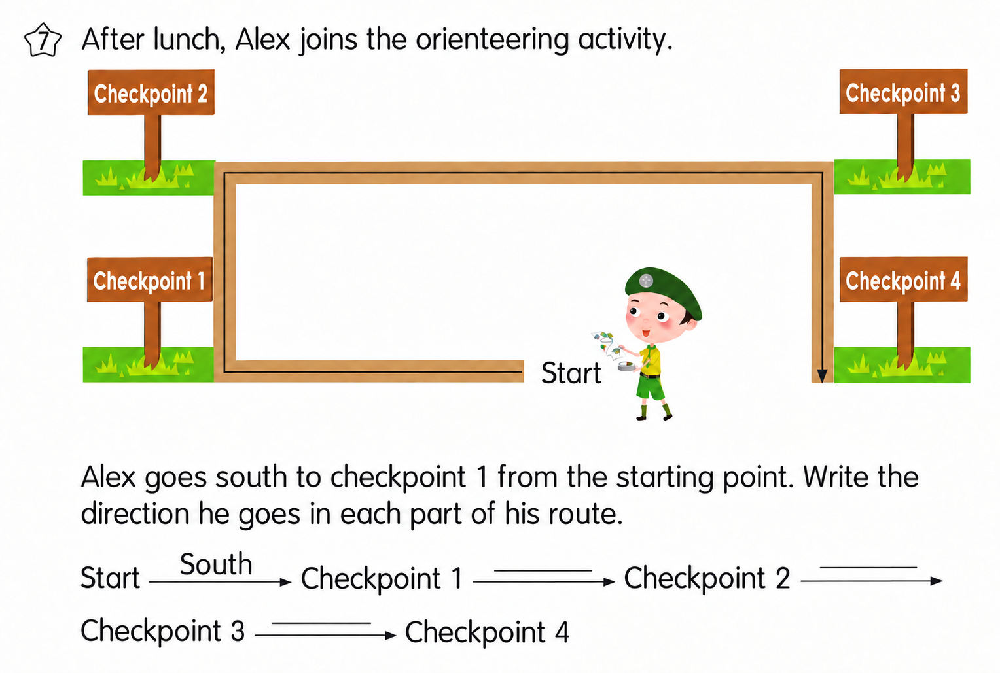
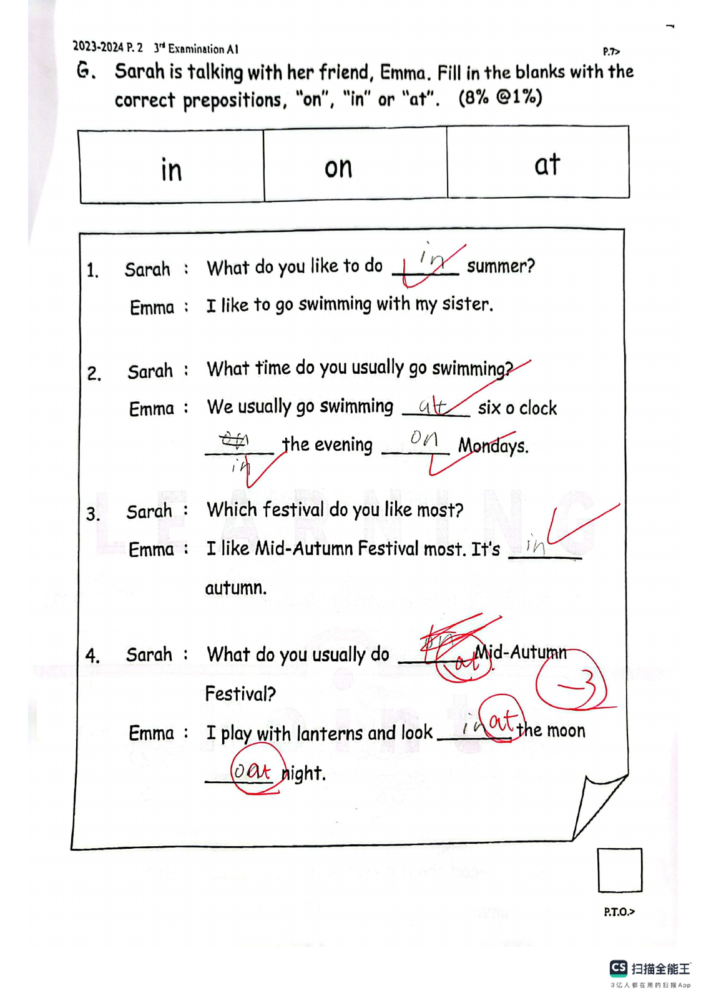
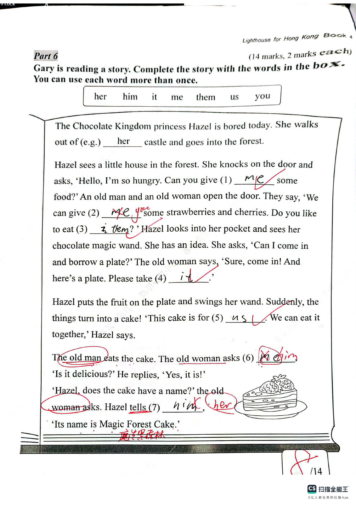
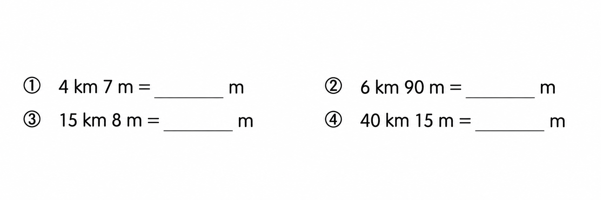

Answer: Checkpoint 1 → 2: west; Checkpoint 2 → 3: north; Checkpoint 3 → 4: east
已掌握
| # | 单词/词组 | 中文意思 | 例句/说明 | 已掌握 |
|---|---|---|---|---|
| noun 名词 | ||||
| 1 | fur | 皮毛 | The rabbit has soft fur. | |
| 2 | group | 小组 | We work in a group. | |
| 3 | future | 未来 | I will study hard in the future. | |
| 4 | activity | 活动 | This activity is fun. | |
| 5 | meat | 肉类 | I eat meat for dinner. | |
| verb 动词 | ||||
| 6 | locate | 定位 | We can locate the place on the map. | |
| 7 | feel | 感觉 | I feel happy today. | |
| 8 | choose | 选择 | I choose a book. | |
| 9 | draw | 绘画 | I draw a picture. | |
| phrase 短语 | ||||
| 10 | post office | 邮局 | I sent the parcel from the post office. | |
| adjective 形容词 | ||||
| 11 | hard | 硬的；困难的 | This question is hard. | |
| 12 | clever | 聪明的 | She is clever and kind. | |
| 13 | same | 相同的 | We are in the same class. | |
| 14 | dry | 干燥的；干的 | My clothes are dry now. | |
| adverb 副词 | ||||
| 15 | sometimes | 有时 | I sometimes walk to school. | |
| verb/noun 动词/名词 | ||||
| 16 | change | 改变，找零 | I can change my answer. | |
| uncategorized 未分类 | ||||
| 17 | wait | 等待 | Please wait for me at the gate. | |
| 18 | throw | 扔掉 | Please throw the empty packet in the bin. | |
| 19 | kitchen | 厨房 | Dad is cooking in the kitchen. | |
| 20 | diary | 日记 | I write in my diary every evening. | |
| # | 单词/词组 | 中文意思 | 例句/说明 | 已掌握 |
|---|---|---|---|---|
| adjective 形容词 | ||||
| 1 | fantastic | 超棒的 | The show was fantastic. | |
| 2 | surprised | 惊讶的 | My parents were surprised. | |
| 3 | angry | 生气的 | Mum was angry because Jack sold the cow. | |
| noun 名词 | ||||
| 4 | beach | 海滩 | I want to go to the beach. | |
| 5 | pronoun | 代词 | "He" is a pronoun. | |
| 6 | boxing | 拳击 | Boxing is a sport. | |
| 7 | cabbage | 白菜；卷心菜 | The bunny likes cabbage. | |
| 8 | content | 内容 | This book has interesting content. | |
| 9 | fin | 鱼鳍 | A fish has a fin. | |
| 10 | adventure | 奇遇 | The story is a fun adventure. | |
| 11 | pilot | 飞行员 | The pilot flies a plane. | |
| 12 | phrases | 短语 | These phrases are easy to remember. | |
| 13 | kung fu | 功夫 | I like lion dances and kung fu. | |
| 14 | relay race | 接力赛 | Let's join the 4x100m relay race together. | |
| 15 | parade | 游行 | They wear green clothes and have parades. | |
| 16 | notice | 通知 | Eric is reading a school notice. | |
| noun phrase 名词短语 | ||||
| 17 | a knife | 刀 | Cut it into small pieces with a knife. | |
| 18 | General Studies | 常识科 | Some pupils like General Studies. | |
| 19 | living room | 客厅 | There is a sofa in our living room. | |
| 20 | paper animals | 纸制小动物 | She likes making paper animals. | |
| verb 动词 | ||||
| 21 | pack | 打包 | Eric packs the basket but there is a hole in the bottom! | |
| 22 | train | 训练 | I train every day. | |
| 23 | wrap | 包装 | Please wrap the present in paper. | |
| 24 | bark | （狗）吠叫 | Dogs sometimes bark at strangers. | |
| verb phrase 动词短语 | ||||
| 25 | sing carols | 唱圣诞颂歌 | We sing carols at Christmas. | |
| 26 | clean up | 清理，打扫干净 | Remember to clean up the area after a picnic. | |
| 27 | prepare food | 准备食物 | Lester is helping his mum prepare food for his party. | |
| uncategorized 未分类 | ||||
| 28 | shout | 喊 | Please do not shout in the library. | |
| adverb 副词 | ||||
| 29 | always | 总是 | We always turn off the lights when we leave a room. | |
| question phrase 疑问短语 | ||||
| 30 | how much | 多少（用于不可数名词） | How much milk is there in the fridge? | |
| # | 单词/词组 | 中文意思 | 例句/说明 | 已掌握 |
|---|---|---|---|---|
| time/date 时间日期 | ||||
| 1 | May | 五月 | May is the fifth month. | |
| 2 | Monday | 星期一 | Monday is a weekday. | |
| 3 | Thursday | 星期四 | Thursday is a weekday. | |
| time unit 时间单位 | ||||
| 4 | year | 年 | A year has 12 months. | |
| 5 | hour | 时 | An hour has 60 minutes. | |
| numbers 数字 | ||||
| 6 | six | 6 | Six is 6. | |
| 7 | nine | 9 | Nine is 9. | |
| 8 | eleven | 11 | Eleven is 11. | |
| 9 | eighteen | 18 | Eighteen is 18. | |
| 10 | seventy | 70 | Seventy is 70. | |
| 11 | eighty | 80 | Eighty is 80. | |
| 12 | hundred | 百 | One hundred is 100. | |
| solid shape 立体图形 | ||||
| 13 | triangular pyramid | 三棱锥 | A triangular pyramid has triangular faces. | |
| 14 | cylinder | 圆柱 | A cylinder has two circular faces. | |
| geometry 几何 | ||||
| 15 | adjacent side | 邻边 | These are adjacent sides. | |
| # | 单词/词组 | 中文意思 | 例句/说明 | 已掌握 |
|---|---|---|---|---|
| operations 运算 | ||||
| 1 | altogether | 一起 | How many are there altogether? | |
| geometry 几何 | ||||
| 2 | perpendicular | 垂直 | Perpendicular lines meet at a right angle. | |
| 3 | acute angle | 锐角 | An acute angle is smaller than a right angle. | |
| 4 | line segment | 线段 | Draw a line segment. | |
| 5 | identical | 完全相同的 | These two triangles are identical in shape and size. | |
| answer 答案 | ||||
| 6 | result | 结果 | Check the result after you calculate. | |
| place value 位值 | ||||
| 7 | units | 个位 | The digit is in the units place. | |
| 8 | 5-digit number | 五位数 | 12,345 is a 5-digit number. | |
| comparison 比较 | ||||
| 9 | more | 更多 | 8 is more than 5. | |
| 10 | least | 最小的；最少的 | Which number is the least? | |
| 11 | lighter | 更轻的 | A pencil is lighter than a brick. | |
| 12 | heaviest | 最重的 | The 3 kg bag is the heaviest of the 1 kg, 2 kg and 3 kg bags. | |
| time/date 时间日期 | ||||
| 13 | midnight | 半夜；午夜（凌晨零点） | Midnight is twelve o'clock at night. | |
| operations calculation 运算 | ||||
| 14 | multiplication | 乘法 | Multiplication can use times. | |
| 15 | subtract A from B | B-A | "Subtract A from B" means B - A. | |
| 16 | mixed operations | 混合运算 | Mixed operations use more than one operation. | |
| 17 | equally | 平等地 | Share the apples equally. | |
| 18 | dividend | 被除数 | The dividend is divided by the divisor. | |
| currency money 货币 | ||||
| 19 | dollar | 元 | One dollar has 100 cents. | |
| 20 | cent | 分 | One cent is a small amount of money. | |
| 21 | exchange | 交换 | We exchange money at the counter. | |
| 22 | pay for | 支付 | I pay for the book. | |
| 23 | coin | 硬币 | The coin is round. | |
| 24 | change | 零钱 | Count the change after paying. | |
| measurement 测量 | ||||
| 25 | centimetre | 厘米 | A centimetre is a small unit of length. | |
| 26 | weight | 重量 | The weight of this bag is 2 kg. | |
| directions tool 方向工具 | ||||
| 27 | compass | 指南针 | A compass shows directions. | |
| 句型结构 | ||||
| 28 | Angle ... is smaller than Angle ... | 角......小于角...... | Angle A is smaller than Angle B. | |
| 29 | Angle ... is the smallest. | 角......是最小的。 | Angle B is the smallest. | |
| plane shape 平面图形 | ||||
| 30 | trapezium | 梯形（只有一组对边平行的四边形） | A trapezium has exactly one pair of parallel sides. | |




![The map below shows the routes from Alex’s home to the campsite. (a) The route between the campsite and the ____ is the shortest. This route is ____ km long. (b) The shortest route from Alex’s home to the campsite is ____ km long. The shop(s) that he goes past in this route include(s): ____. (c) The instructor needs to go from the campsite to the supermarket and the accessory store to buy something, and then go back to the campsite. He has to travel at least ____ km, and his route is: Campsite → ____ → Campsite.](assets/question_sets/math_grade3_mistakes_2026-09-22_clean/image5.png)